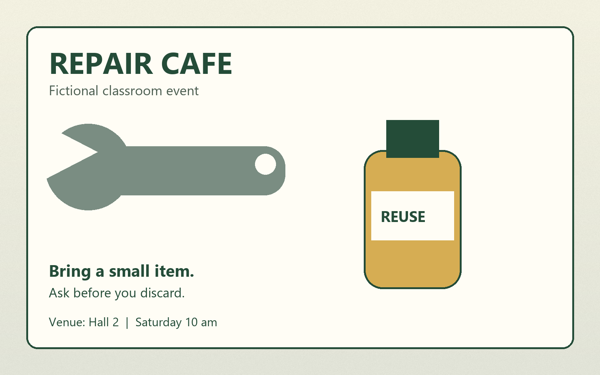

FICTIONAL CLASSROOM PUBLICATION
[Activity title]
Give useful items another life

Bring a small item and talk to a volunteer. This practice publication is not an invitation to a real event.
Find session detailsSession details
Venue
[Venue]
Time
[Time]
This local example does not collect registrations or contact details.
Return to overviewListen or read
Transcript
Repair cafe. Give useful items another life. Bring a small item and talk to a volunteer. Hall two. Saturday at ten. This is a fictional classroom event.
The supporting tone has no additional message. The illustration’s practical venue and time are also written in the session details.
Return to overview